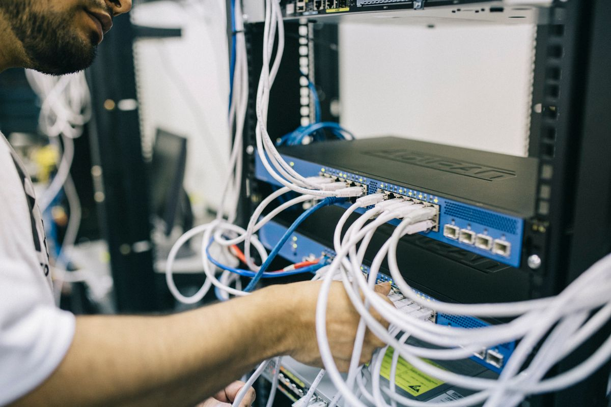

เตรียมระบบ
เปิดฐานข้อมูล Web, API และ Worker ให้ตรงกับงาน
NETWORK OPERATIONS / USER HANDBOOK
คู่มือใช้งาน Ai Notify
ค้นหาอุปกรณ์ · เชื่อมโยง Log · วิเคราะห์ RCA · แจ้งเตือน Teams
01 / START HERE
Ai Notify รวมข้อมูลเครือข่ายและเหตุการณ์ของแต่ละองค์กรไว้ในพื้นที่ทำงานเดียว เพื่อให้ทีมตรวจสอบสาเหตุและติดตามผลได้สะดวกขึ้น
เปิดฐานข้อมูล Web, API และ Worker ให้ตรงกับงาน
เข้าสู่ระบบ ตรวจสิทธิ์ และเลือกขอบเขตข้อมูล
Discover จาก Seed IP แล้วตรวจ Topology และ VLAN
ดู Log อ่านรายงาน และตรวจสถานะส่ง Teams
02 / HOW IT WORKS
หน้าเว็บ: Next.js ส่งคำขอผ่าน /api/* ไป FastAPI ใช้สำหรับดูข้อมูลและสั่งงาน
Worker: ทำงานเบื้องหลัง แยกวงจร Discovery และ Analysis หาก Worker หยุด งานใหม่อาจค้างในคิว
03 / ROLES & ORGANIZATIONS
| ความสามารถ | Admin | Employee |
|---|---|---|
| ดู Overview, Topology, Logs และ Reports | ทุกองค์กร | องค์กรที่มีสิทธิ์ |
| สั่ง Discovery และใช้งาน Topology | องค์กรที่เลือก | องค์กรที่มีสิทธิ์ |
| สร้างองค์กร / ผู้ใช้ / เพิ่มสมาชิกองค์กร | ได้ | ไม่ได้ |
| เปลี่ยน Webhook key / รหัสผ่านผู้ใช้ | ได้ | ติดต่อ Admin |
| เปิด–ปิด Ai Notify ทุกองค์กร | ได้ | ไม่ได้ |
Webhook key แยกตามองค์กร แต่ปลายทาง Teams และสวิตช์ Ai Notify ใช้ร่วมกันทั้งระบบ
04 / START THE APP
สำหรับเครื่องที่ติดตั้งโปรเจกต์และตั้งค่าแล้ว เปิด Docker Desktop และรอ Engine พร้อม จากนั้นเปิด PowerShell
cd D:\astar-v1
docker compose --env-file backend/.env up -d postgres
docker compose --env-file backend/.env psbackend/.venv/Scripts/python backend/run_local.pyเมื่อฐานข้อมูลขึ้น healthy ใช้คำสั่งนี้เพื่อเริ่มทั้ง 3 บริการ Worker จะรับงานค้างในคิวและอาจส่ง Teams
เปิดบริการแยกตาม คำสั่งดูแลระบบ เหมาะเมื่อยังไม่ต้องการให้ Worker รับงาน
อย่ารันชุดแยกพร้อมกับ run_local.py เพราะใช้พอร์ตเดียวกัน
05 / SIGN IN
เข้า http://localhost:3000 หรือ URL ที่ผู้ดูแลระบบแจ้ง
ใช้บัญชีที่ Admin สร้างให้ ระบบไม่มีหน้าสมัครสมาชิกสาธารณะ
ตรวจชื่อองค์กรก่อนค้นหาอุปกรณ์หรือเปิดดูรายงาน
ดูสถานะรวม แล้วเลือกเมนูทางซ้ายตามงานที่ต้องการ
ภาพจำลองเมนูจากโครงสร้างโปรเจกต์ ไม่ใช่ข้อมูลขององค์กรจริง
backend/.venv/Scripts/python backend/setup_local.py --admin แล้วกรอกอีเมล ชื่อ และรหัสผ่านอย่างน้อย 12 ตัวอักษรด้วยตนเอง ชุดนี้ไม่มีบัญชีหรือรหัสผ่านเริ่มต้น และไม่สร้างไฟล์รหัสผ่าน Admin06 / ADMIN ONLY
เตรียมองค์กรและบัญชีให้พร้อม ก่อนเชื่อมต่อ Incident จาก ElastAlert2
กรอกชื่อองค์กร กดเพิ่ม และเก็บ Webhook key ที่แสดงครั้งเดียวในที่เก็บความลับของทีม
ใส่ชื่อ อีเมล รหัสผ่าน บทบาท และองค์กรสำหรับ Employee
เลือกบัญชี Employee ที่มีอยู่ แล้วเลือกองค์กรที่ต้องการเพิ่ม การเพิ่มสิทธิ์ไม่ย้ายข้อมูลเดิม
| งานดูแลบัญชี | ผลที่ต้องทราบ |
|---|---|
| เปลี่ยนรหัสผ่านผู้ใช้ | Session เดิมทั้งหมดของบัญชีนั้นถูกยกเลิก ต้องเข้าสู่ระบบใหม่ |
| ลบผู้ใช้ | บัญชีเข้าใช้งานไม่ได้ ประวัติอ้างอิงยังอยู่ ลบบัญชีตัวเองไม่ได้ |
| เปลี่ยน Webhook key | Key เดิมใช้ไม่ได้ ต้องอัปเดตฝั่ง ElastAlert2 ทันที |
07 / OVERVIEW
จำนวนอุปกรณ์และ Links ใน Snapshot ล่าสุด
เหตุการณ์ที่รับเข้าและบันทึกในองค์กร
พร้อมจำนวนงานรอประมวลผลและงานไม่สำเร็จ
นับการส่งจากรายงานที่วิเคราะห์แล้ว
กราฟเปรียบเทียบรายงานทั้งหมดกับรายงานที่วิเคราะห์สำเร็จใน 7 วันล่าสุด โดยแบ่งวันตาม UTC
ตรวจเวลาอัปเดต Topology แล้วเปิดรายงานล่าสุดเพื่อดูอุปกรณ์ สถานะ และรายละเอียด
08 / DISCOVER YOUR NETWORK
ตรวจว่า Worker ทำงานและเครื่องเข้าถึงเครือข่ายที่ได้รับอนุญาต
ระบุ SSH username / password ที่มีสิทธิ์อ่านข้อมูลอุปกรณ์
หน้าเว็บตั้งต้นที่ 3 ควรเลือกตามขอบเขตงาน
ติดตามงานจนเสร็จ แล้วเปิด Topology

DISCOVERY_ALLOWED_CIDRS ใน backend/.env ให้ครอบคลุมทั้ง Seed และอุปกรณ์ข้างเคียง แล้วเริ่ม Worker ใหม่หนึ่งองค์กรมี Discovery ที่ active ได้หนึ่งงาน จำกัดเวลาทำงาน 15 นาที ระบบเก็บรหัสผ่าน SSH แบบเข้ารหัสและไม่แสดงกลับในหน้าเว็บ
09 / DISCOVERY PROGRESS
| สถานะ | ความหมาย / การดำเนินการ |
|---|---|
queued | รอ Worker รับงาน หากรอนานให้ตรวจ Worker |
running | กำลังเชื่อมต่อ SSH อ่านข้อมูลอุปกรณ์ เพื่อนบ้าน และ VLAN |
completed | เปิด Topology และตรวจผล รวมทั้งรายการอุปกรณ์ที่เข้าถึงไม่ได้ |
failed | อ่านข้อผิดพลาด ตรวจ SSH / เส้นทาง / CIDR แล้วสร้างงานใหม่หลังแก้ไข |
cancelling → cancelled | รอ Worker หยุดงานจริง ถ้ายัง queued จะยกเลิกได้ทันที |
10 / TOPOLOGY & VLAN
Topology เป็นภาพจาก Discovery ล่าสุด ไม่ใช่การตรวจสถานะอุปกรณ์แบบสดตลอดเวลา ส่วนตำแหน่งที่จัดบนแผนผังเก็บในเบราว์เซอร์
11 / FIND THE EVIDENCE
ค้นหาด้วยข้อความหรือชื่ออุปกรณ์ที่เกี่ยวข้อง
ตัวกรองครอบคลุมทั้งวันตามเขตเวลาของเบราว์เซอร์ แล้วกดค้นหา
เทียบพอร์ตและชื่ออุปกรณ์กับ Topology ขององค์กรเดียวกัน
ตรวจ Payload ต้นฉบับเมื่อจำเป็นต้องตรวจการส่งข้อมูลหรือรายละเอียดเพิ่มเติม
12 / INCIDENT INGESTION
ผู้ดูแลใช้ Webhook key ขององค์กร และส่งเข้า FastAPI ที่ ElastAlert2 เข้าถึงได้ ไม่ใช่พอร์ตหน้าเว็บ Next.js
POST /webhook/incident
Content-Type: application/json
X-Webhook-Key: <organization-secret>
Idempotency-Key: <stable-incident-id>
{
"device_name": "SW-CORE-01",
"matches": [{
"@timestamp": "2026-10-06T03:00:00Z",
"message": "Interface Gi1/0/1 down",
"severity": "critical"
}]
}queued เมื่อเปิด Ai Notify หรือ suppressed เมื่อปิดตัวอย่างโครงสร้างสำหรับอธิบาย ไม่ใช่ข้อมูลหรือ Secret ของระบบจริง
docs/elastalert-integration.md13 / ANALYSIS REPORTS
เลือก Analysis reports → ค้นหาอุปกรณ์หรือช่วงวันที่ → กด “เปิดรายงาน”
ยืนยันอุปกรณ์ เวลา พอร์ต และ Log ที่เกี่ยวข้อง ก่อนอ่านข้อสรุป
เทียบอุปกรณ์ที่เชื่อมต่อและ VLAN กับ Snapshot ล่าสุดขององค์กร
รายงานขอให้ Ollama สร้าง RCA ภาษาไทย ให้ทีมตรวจความถูกต้องก่อนลงมือกับอุปกรณ์
14 / GLOBAL NOTIFICATION CONTROL
Admin เปิดที่ Settings เมื่อ Worker, Ollama model และ Teams webhook พร้อม เหตุการณ์ใหม่จะเข้าสู่คิววิเคราะห์
ระงับงานวิเคราะห์ที่รอหรือกำลังทำ หยุดการส่งใหม่ การเปิดอีกครั้งจะไม่ย้อนประมวลผลงานที่ suppressed
| สถานะ Teams | อ่านผลอย่างไร |
|---|---|
sent | ระบบได้รับผลตอบรับสำเร็จจาก Webhook ให้ตรวจข้อความในช่อง Teams เมื่อต้องยืนยันปลายทาง |
not_sent / sending | ยังไม่ได้ส่ง / อยู่ระหว่างส่ง |
failed / unknown | ส่งไม่สำเร็จหรือยืนยันไม่ได้ / Worker หยุดระหว่างส่งจนไม่ทราบผล |
suppressed | ระงับตามสวิตช์ Ai Notify |
ข้อความที่ส่งออกไปแล้วเรียกคืนไม่ได้ ระบบรอการส่งที่กำลังดำเนินการก่อนยืนยัน OFF และไม่ Retry งานที่ขัดจังหวะโดยอัตโนมัติเพื่อลดการแจ้งซ้ำ
15 / EXPORT & SHARE
นำข้อความรายงานไปเรียบเรียงต่อเป็นคู่มือ บันทึกเหตุการณ์ หรือสไลด์
เก็บข้อมูลแบบมีโครงสร้างสำหรับตรวจสอบหรือใช้งานต่อ
นำข้อมูลรายงานไปเปิดด้วยโปรแกรมตารางคำนวณ
เปิดรายงาน → พิมพ์ / PDF → Save as PDF ในเบราว์เซอร์
กด โหมดนำเสนอ เพื่อดูทีละหัวข้อ ใช้ปุ่ม ← → เปลี่ยนหน้า และ Esc กลับโหมดอ่าน หรือกด พิมพ์ / PDF เพื่อส่งออกทุกหัวข้อเป็นแนวนอน
สามารถเปิดไฟล์ HTML ในเครื่องได้โดยตรง เก็บโฟลเดอร์ assets, CSS และ JavaScript ไว้ด้วยกัน
16 / WALKTHROUGH
สถานการณ์สมมติสำหรับสาธิต ไม่ใช่ผลการทดสอบหรือเหตุการณ์จริงในระบบ
เลือกองค์กรและ Discovery เพื่อให้มี Topology / VLAN ล่าสุด เตรียม Worker และเปิด Ai Notify หลังตรวจ Ollama / Teams
ElastAlert2 ส่ง Log ของ SW-CORE-01 และพอร์ต Gi1/0/1 เข้า API ด้วย Key ขององค์กร
ค้นหา SW-CORE-01 ใน Log history เปิด Payload แล้วเทียบพอร์ตกับ Links ใน Topology
เปิดรายงาน RCA ตรวจข้อเสนอแนะกับหลักฐานจริง ยืนยันสถานะ Teams และส่งออก PDF ให้ทีมปฏิบัติการ
17 / TROUBLESHOOTING
| อาการ | ตรวจอะไรเป็นลำดับแรก |
|---|---|
| เปิดเว็บไม่ได้ | Web ขึ้น Ready หรือยัง? ตรวจพอร์ต 3000 และ URL |
| เข้าเว็บได้ แต่ Login / โหลดข้อมูลไม่ได้ | API พอร์ต 8000, PostgreSQL healthy และ BACKEND_URL ใน .env.local |
| ไม่เห็นข้อมูลที่คาดไว้ | องค์กรที่เลือก สิทธิ์สมาชิก และตัวกรองวันที่ / อุปกรณ์ |
| Discovery ค้าง queued | Worker ทำงานหรือไม่ และมีงาน active ขององค์กรอยู่หรือไม่ |
| Discovery failed / พบอุปกรณ์ไม่ครบ | Seed IP, SSH, เส้นทางเครือข่าย, CIDR, depth และรายการ failures |
| รายงาน suppressed | Ai Notify ปิดอยู่ หรือถูกปิดระหว่างทำงาน การเปิดใหม่ไม่ Replay |
| Analysis failed | Ollama URL, model ที่โหลดไว้ และการเชื่อมต่อจากเครื่อง Worker |
| รายงาน completed แต่ Teams ไม่เข้า | ดู notification status ตรวจ Webhook / ปลายทาง / เครือข่าย |
| Webhook ถูกปฏิเสธ | ใช้ Backend URL และ X-Webhook-Key ล่าสุดขององค์กรนั้นหรือไม่ |
เมื่อส่งเรื่องให้ผู้ดูแล ระบุเวลา องค์กร Job / Report ID และข้อความผิดพลาด โดยไม่แนบรหัสผ่านหรือ Webhook key
18 / OPERATOR REFERENCE
ใช้จาก D:\astar-v1 หลังฐานข้อมูลพร้อม โดยเปิดแต่ละบริการใน PowerShell คนละหน้าต่าง
backend/.venv/Scripts/python backend/db.py
backend/.venv/Scripts/python -m uvicorn main:app --app-dir backend --host 127.0.0.1 --port 8000npm.cmd run dev -- --hostname 127.0.0.1 --port 3000backend/.venv/Scripts/python backend/worker.pydocker compose --env-file backend/.env stop postgres การปิดแท็บเว็บไม่หยุดบริการคำสั่งเหล่านี้ใช้กับบริการที่เปิดใน Terminal หากเริ่มเบื้องหลัง ให้ผู้ดูแลหยุดเฉพาะโปรเซสของบริการนั้น อย่าใช้ down -v เมื่อต้องการเพียงหยุดระบบ เพราะจะลบ Volume ข้อมูล
19 / FIRST-TIME SETUP
ตามข้อกำหนดโปรเจกต์: Node.js 20.9+, Python 3.11+ และ Docker Desktop ที่เปิด Engine แล้ว
cd D:\astar-v1
npm.cmd ci
python -m venv backend/.venv
backend/.venv/Scripts/python -m pip install -r backend/requirements.lock.txt
backend/.venv/Scripts/python backend/setup_local.py
docker compose --env-file backend/.env up -d postgres
# รอให้ postgres เป็น healthy
docker compose --env-file backend/.env ps
backend/.venv/Scripts/python backend/setup_local.py --adminDATABASE_URL — การเชื่อมต่อ PostgreSQLDISCOVERY_ALLOWED_CIDRS — เครือข่ายที่อนุญาตOLLAMA_URL / OLLAMA_MODEL — ปลายทางและโมเดลที่โหลดแล้วTEAMS_WEBHOOK_URL — ใน backend/Notify.env หรือค่าไม่ว่างใน backend/.envBACKEND_URL — ใน .env.local สำหรับ Next.jssetup_local.py สร้าง config และคีย์เข้ารหัสสำหรับการติดตั้งใหม่ โดยไม่เขียนทับ config หรือ Admin ที่มีอยู่ เก็บฐานข้อมูลและคีย์เข้ารหัสในชุดสำรองข้อมูลด้วย หลังแก้ค่า Worker ให้เริ่ม Worker ใหม่
docs/ubuntu-production.md ซึ่งครอบคลุม HTTPS, APP_ORIGIN, COOKIE_SECURE และการแยกบริการ20 / PRESENTATION GUIDE
| ช่วง | หัวข้อที่ใช้ | ประเด็นพูด |
|---|---|---|
| 1 นาที | เริ่มต้น + ภาพรวม | ทำไมทีมต้องเห็น Log และบริบทเครือข่ายร่วมกัน |
| 2 นาที | ระบบทำงานอย่างไร + บทบาท | ข้อมูลเดินทางอย่างไร และใครดูข้อมูลองค์กรใดได้ |
| 3 นาที | Discovery + Topology + VLAN | เตรียมบริบทก่อนเกิด Incident และตรวจผลค้นหา |
| 3 นาที | Logs + Reports + Teams | ตรวจหลักฐาน อ่าน RCA และแยกสถานะส่งแจ้งเตือน |
| 2 นาที | ตัวอย่างหนึ่งเหตุการณ์ | เล่าการใช้งานตั้งแต่พอร์ต down จนส่งต่อให้ทีม |
| 1 นาที | แก้ปัญหา + สรุปขั้นตอนประจำวัน | เลือกองค์กร → ตรวจบริบท → ตรวจเหตุการณ์ → ยืนยันผล |
21 / REFERENCES & IMAGE CREDITS
README.md — ติดตั้งและตรวจระบบdocs/run-web-windows-th.md — เปิด / ปิดบน Windowsdocs/implementation.md — สิทธิ์และพฤติกรรมงานdocs/elastalert-integration.md — เชื่อม Incidentapp/components/workspace.tsx และ vlan-tables.tsx — เมนูและการใช้งานจริงbackend/worker.py และ analysis_prompt.py — สถานะและแนวทาง RCAภาพสายเครือข่าย: Brett Sayles / Pexels · Photo 2881229
ภาพวิศวกร: Field Engineer / Pexels · Photo 442150
เงื่อนไขการใช้ภาพ Pexels · สืบค้น 6 ตุลาคม 2026 · ภาพใช้ประกอบบริบท ไม่ใช่ภาพสถานที่หรือระบบจริงของโครงการ
คู่มือนี้อธิบายพฤติกรรมจากโค้ดและเอกสารที่ตรวจอ่าน ไม่ได้รับรองว่า SSH, Ollama หรือ Teams ของแต่ละสภาพแวดล้อมเชื่อมต่อสำเร็จ ฟอนต์ Noto Sans Thai พร้อมใบอนุญาตอยู่ใน assets/OFL.txt